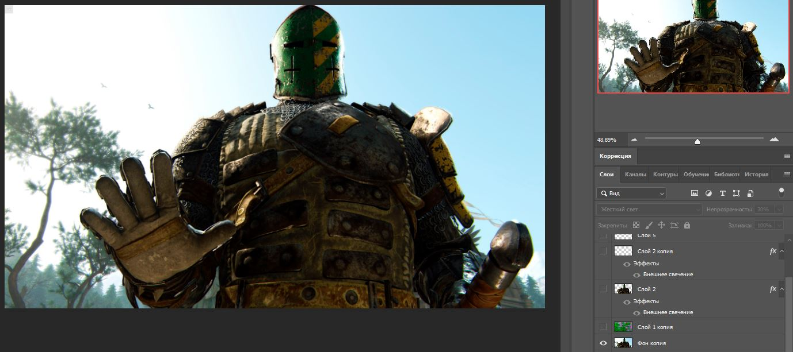
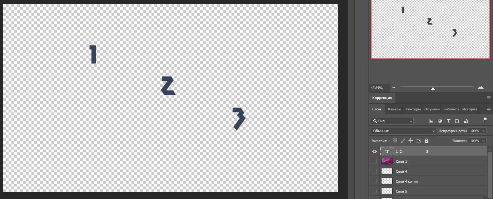

Для создания gif анимации в фотошопе с нуля вам понадобятся слои, которые будут выступать в роли кадров. В фотошопе вы можете, как загрузить какие-либо имеющиеся изображения, так и создать свои собственные (рисунок, надпись, полупрозрачный градиент и т.д.)
|  |  |